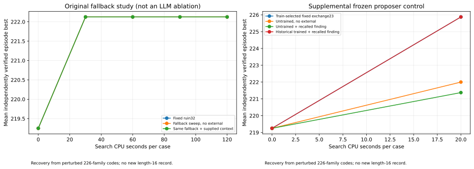

CodeGarden / binary two-deletion codes
Search, then verify.
Actual recorded experiments. The decoder below runs live in your browser. A replay is never presented as a live research worker.
Best independently verified
—
Strongest reproduced baseline
—
226-word arena witness
Strict-improvement target
—
No new global record claimed
Phase-three status · recorded 15 November, 10:42 UTC
Best verified: 226. Target: 227 remains open.
Native exact search exhausted strict exchanges removing at most nine words from the reproduced root. The ten-word search is resuming its unfinished root partitions. These local results establish no global optimum.
Active hypotheses: breakout tabu search on227-word collision states; resumed exact radius-ten roots; longer full-universe diversification. Completed tensor projections found no novel226 code. Inspect the bounded Modal run. This panel is a dated snapshot, not a live worker.
Research report and limitations · Pinned provenance
Last tested hypothesis
Operators: randomized construction → bounded exchanges → structural destruction → opportunity-driven ejection → exact repair.
Phase-two research cycle · recorded replay
Matched recovery controls
These cases start from perturbed known constructions. Recovering 226 does not establish a larger code. The original fallback study and supplemental frozen-proposer study have different budgets and are shown separately.
| Condition | Cases | Sum of verified best sizes | Search CPU s | Controller s |
|---|

A rejected candidate
0000000000000000
0000000000000001
Both produce 00000000000000. This is a cross-codeword collision; repeated ways to delete from the first word alone are harmless.
Verified best progression
Includes the reproduced incumbent. The flat line records no strict improvement.
Verified experiment scores
Separate runs, not a fabricated continuous improvement curve. Native rows count compiled iterations; Python rows count research cycles. These are different work units. Matched comparisons are described in the report.
| Policy | Seed | Best | Iterations / cycles | Seconds |
|---|
Witness and verification
Independent verification output
Sources and memory
Role and memory references